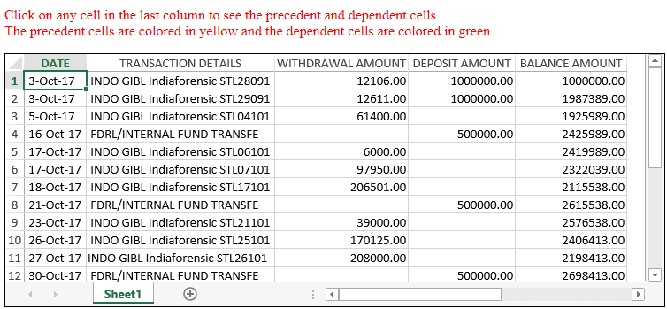

SpreadJS provides extensive support for formula auditing by allowing users to display relationships between formulas and cells. This can be done by tracing the precedent and dependent cells in the worksheet.
Formula Auditing helps users in identifying calculation bottlenecks, debugging formulas and validating the accuracy of results while working with spreadsheets. Further, this feature helps users to:
Precedent cells are the cells that are referred to by a formula lying in another cell. Dependent cells are the cells that contain formulas and refer to other cells.
For example, if cell D10 contains the formula "=B5", then the cell B5 will be considered as a precedent to cell D10 and the cell D10 will be considered as a dependent of cell B5.
While auditing formulas in worksheets, you can trace precedents using the getPrecedents() method and track dependents using the getDependents() method to visualize and display cells related to the selected formula cell.
For instance - Let's say you're working on a finance or banking application where the monthly transactions (credits & debits) are analyzed using formulas in spreadsheets and a monthly report is generated for each customer. In this scenario, a single evaluation error can directly result in losses and hence, it becomes a pre-requisite to audit formulas before sharing the monthly accounting reports with the customers.
The following image illustrates a small financial application where the balance amount is calculated for every transaction using formulas and the precedent cells and dependent cells are highlighted upon clicking any cell in the last column.

The following example code highlights the precedent and dependent cells in the worksheet.
| JavaScript |
Copy Code
|
|---|---|
<script type="text/javascript"> var oldPrecedentCells, oldDependentCells; $(document).ready(function () { // Initializing Spread var spread = new GC.Spread.Sheets.Workbook($("#sampleDiv")[0], { autoFitType: GC.Spread.Sheets.AutoFitType.cellWithHeader }); // Set datasource for the sheet var jsonArray = [ { " DATE ": " 3-Oct-17 ", " TRANSACTION DETAILS ": " INDO GIBL Indiaforensic STL28091 ", " WITHDRAWAL AMOUNT ": 12106.00, " DEPOSIT AMOUNT ": 1000000.00, " BALANCE AMOUNT ": "" }, { " DATE ": " 3-Oct-17 ", " TRANSACTION DETAILS ": " INDO GIBL Indiaforensic STL29091 ", " WITHDRAWAL AMOUNT ": 12611.00, " DEPOSIT AMOUNT ": 1000000.0, " BALANCE AMOUNT ": "" }, { " DATE ": " 5-Oct-17 ", " TRANSACTION DETAILS ": " INDO GIBL Indiaforensic STL04101 ", " WITHDRAWAL AMOUNT ": 61400.00, " DEPOSIT AMOUNT ": null, " BALANCE AMOUNT ": "" }, { " DATE ": " 16-Oct-17 ", " TRANSACTION DETAILS ": " FDRL/INTERNAL FUND TRANSFE ", " WITHDRAWAL AMOUNT ": null, " DEPOSIT AMOUNT ": 500000.00, " BALANCE AMOUNT ": "", }, { " DATE ": " 17-Oct-17 ", " TRANSACTION DETAILS ": " INDO GIBL Indiaforensic STL06101 ", " WITHDRAWAL AMOUNT ": 6000.00, " DEPOSIT AMOUNT ": null, " BALANCE AMOUNT ": "", }, { " DATE ": " 17-Oct-17 ", " TRANSACTION DETAILS ": " INDO GIBL Indiaforensic STL07101 ", " WITHDRAWAL AMOUNT ": 97950.00, " DEPOSIT AMOUNT ": null, " BALANCE AMOUNT ": "" }, { " DATE ": " 18-Oct-17 ", " TRANSACTION DETAILS ": " INDO GIBL Indiaforensic STL17101 ", " WITHDRAWAL AMOUNT ": 206501.00, " DEPOSIT AMOUNT ": null, " BALANCE AMOUNT ": "" }, { " DATE ": " 21-Oct-17 ", " TRANSACTION DETAILS ": " FDRL/INTERNAL FUND TRANSFE ", " WITHDRAWAL AMOUNT ": null, " DEPOSIT AMOUNT ": 500000.00, " BALANCE AMOUNT ": "" }, { " DATE ": " 23-Oct-17 ", " TRANSACTION DETAILS ": " INDO GIBL Indiaforensic STL21101 ", " WITHDRAWAL AMOUNT ": 39000.00, " DEPOSIT AMOUNT ": null, " BALANCE AMOUNT ": "" }, { " DATE ": " 26-Oct-17 ", " TRANSACTION DETAILS ": " INDO GIBL Indiaforensic STL25101 ", " WITHDRAWAL AMOUNT ": 170125.00, " DEPOSIT AMOUNT ": null, " BALANCE AMOUNT ": "" }, { " DATE ": " 27-Oct-17 ", " TRANSACTION DETAILS ": "INDO GIBL Indiaforensic STL26101", " WITHDRAWAL AMOUNT ": 208000.00, " DEPOSIT AMOUNT ": null, " BALANCE AMOUNT ": "" }, { " DATE ": " 30-Oct-17 ", " TRANSACTION DETAILS ": " FDRL/INTERNAL FUND TRANSFE ", " WITHDRAWAL AMOUNT ": null, " DEPOSIT AMOUNT ": 500000.00, " BALANCE AMOUNT ": "" } ]; var activeSheet = spread.getActiveSheet(); activeSheet.setDataSource(jsonArray); // Configure the sheet settings activeSheet.getRange(0, 2, 12, 3).formatter('* #.00'); for (var c = 0; c < activeSheet.getColumnCount(); c++) { activeSheet.autoFitColumn(c); } // Set cell formulas activeSheet.setFormula(0, 4, "D2"); for (var r = 1; r < activeSheet.getRowCount(); r++) { activeSheet.setFormula(r, 4, "E" + r.toString() + "+ D" + (r + 1).toString() + "- C" + (r + 1).toString()); } // Trace precedents and dependents for the active cell activeSheet.bind(GC.Spread.Sheets.Events.SelectionChanging, function (e, info) { spread.suspendPaint(); var newRow = info.newSelections[0].row; var newCol = info.newSelections[0].col; ColorPrecedents(activeSheet, newRow, newCol); ColorDependents(activeSheet, newRow, newCol); spread.resumePaint(); }); }); // Paint precedent cells in yellow color function ColorPrecedents(sheet, row, col) { if (oldPrecedentCells) { oldPrecedentCells.forEach(function (node) { sheet.getCell(node.row, node.col).backColor(undefined); }); } var precedentCells = sheet.getPrecedents(row, col); if (precedentCells) { setTimeout(function () { oldPrecedentCells = precedentCells; precedentCells.forEach(function (node) { sheet.getCell(node.row, node.col).backColor("yellow");});}, 10); } } // Paint dependent cells in green color function ColorDependents(sheet, row, col) { if (oldDependentCells) { oldDependentCells.forEach(function (node) { sheet.getCell(node.row, node.col).backColor(undefined); }); } var dependentCells = sheet.getDependents(row, col); oldDependentCells = dependentCells; if (dependentCells) { dependentCells.forEach(function (node) { sheet.getCell(node.row, node.col).backColor("green"); }); } } </script> |
|